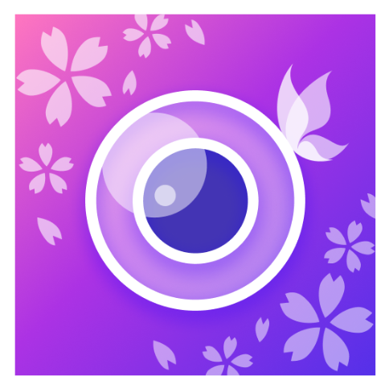
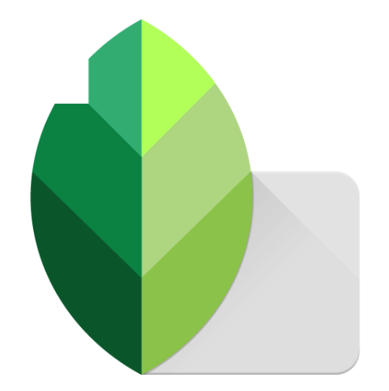
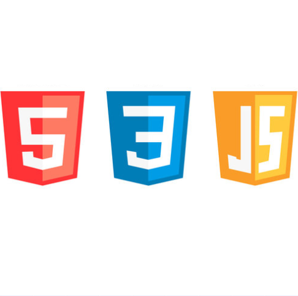

|
நான் 2003 முதல் 2017 வரை கோயம்புத்தூரில் உள்ள G.R.G மெட்ரிகுலேஷன் மேல்நிலைப் பள்ளியில் எல்.கே.ஜி முதல் 12 ஆம் வகுப்பு வரை எனது முழுப் பள்ளிப் படிப்பையும் முடித்தேன். நான் 10 ஆம் வகுப்பில் 422 / 500 மதிப்பெண்கள் பெற்றேன். நான் 11 மற்றும் 12 ஆம் வகுப்பிற்கு கணினியுடன் கூடிய கலைப் படிப்பைத் தேர்ந்தெடுத்தேன், 12 ஆம் வகுப்பில் 863 / 1200 பெற்றேன். |
 |
இந்திரா காந்தி தேசிய திறந்தநிலை பல்கலைக்கழகம் நடத்திய திறன் தேர்வில் A பிரிவு மதிப்பெண் பெற்றதற்காக 2010 ஆம் ஆண்டு அடோரோ இன்ஸ்டிடியூஷன் ஆஃப் மல்டிமீடியாவில் ஸ்காலர்ஷிப் படிப்பைப் பெற்றேன். இந்தக் கல்வி நிறுவனத்தில் சேர்ந்து 2010 மற்றும் 2011ல் இரண்டு நிலை அனிமேஷன் படிப்புகளை முடித்தேன். |
 |
2018 ஜூலை மாதத்தில், கோயம்புத்தூரில் உள்ள இந்துஸ்தான் கலை மற்றும் அறிவியல் கல்லூரியில் B.Com CA பாடப்பிரிவைத் தேர்ந்தெடுத்து சேர்ந்தேன். இந்த மூன்று ஆண்டுகள் பாடத்திட்டத்தின் முதல் பாதியில் நேரடி வகுப்புகளிலும், செமஸ்டர் தேர்வுகளிலும் கலந்து கொண்டேன். இரண்டாம் பாதியில், உலகம் முழுவதும் பரவிய கொரோனா வைரஸ் காரணமாக, கல்வி முழுமையாக ஆன்லைன் வகுப்புகளாக மாற்றப்பட்டது, தேவையான ஆன்லைன் இணைப்பு வசதி இல்லாததால் என்னால் கலந்துகொள்ள முடியவில்லை. ஜூலை 2021 இல், நான் படிப்பை முடித்து B.Com CA மாணவராக பட்டம் பெற்றேன். |


தரவு மேலாண்மை: |

தரவு கையாளுதல்: |

ஆவண தயாரிப்பு: |

வீடியோ திருத்தம்: |

திட்ட மேலாண்மை: |

புகைப்படத் திருத்தம்: |
|

புகைப்படத் திருத்தம்: |

அழகிய மற்றும் படைப்பாற்றல் மிக்க வடிவமைப்பு: |

பயன்பாட்டு திறன்: |
|
கோடிங்: |
ஆவணங்கள் உருவாக்குதல்: |

இணையதள ஹோஸ்டிங்: |

புகைப்படத் திருத்தம்: |

இணையதள உருவாக்கம்: |

கோடிங் மற்றும் தரவுப் பராமரிப்பு: |

2D அநிமேஷன்: |

பாக்ரவுண்ட் திருத்தம்: |

இணையதள ஹோஸ்டிங்: |

 பணிகளைத் திட்டமிடுவதற்கும் நிறைவேற்றுவதற்கும் எனது கவனமான அணுகுமுறைக்காக நான் எப்போதும் அறியப்பட்டவன். பிழைகள் அல்லது மேற்பார்வைகளுக்கு இடமளிக்காமல், எல்லாமே சரியாக ஒழுங்கமைக்கப்பட்டு சீரமைக்கப்படுவதை எனது முறையான இயல்பு உறுதி செய்கிறது.
பணிகளைத் திட்டமிடுவதற்கும் நிறைவேற்றுவதற்கும் எனது கவனமான அணுகுமுறைக்காக நான் எப்போதும் அறியப்பட்டவன். பிழைகள் அல்லது மேற்பார்வைகளுக்கு இடமளிக்காமல், எல்லாமே சரியாக ஒழுங்கமைக்கப்பட்டு சீரமைக்கப்படுவதை எனது முறையான இயல்பு உறுதி செய்கிறது.
 எனது படைப்பாற்றல் மற்றும் புதுமையான சிந்தனைகள் மற்றும் சவால்களுக்கான எனது அணுகுமுறை என்னை வேறுபடுத்தி காட்டுகிறது. எனது இதயத்தைப் பின்பற்றி, எனது படைப்பாற்றலை எனக்கு வழிகாட்ட நான் அனுமதிக்கிறேன், இதன் விளைவாக அற்புதமான மற்றும் அலங்கரிப்பான செயலாக்கங்கள் உருவாக்கப்படுகிறது, நீண்ட காலம் நீடிக்கும் தாக்கத்தை அது ஏற்படுத்துகிறது.
எனது படைப்பாற்றல் மற்றும் புதுமையான சிந்தனைகள் மற்றும் சவால்களுக்கான எனது அணுகுமுறை என்னை வேறுபடுத்தி காட்டுகிறது. எனது இதயத்தைப் பின்பற்றி, எனது படைப்பாற்றலை எனக்கு வழிகாட்ட நான் அனுமதிக்கிறேன், இதன் விளைவாக அற்புதமான மற்றும் அலங்கரிப்பான செயலாக்கங்கள் உருவாக்கப்படுகிறது, நீண்ட காலம் நீடிக்கும் தாக்கத்தை அது ஏற்படுத்துகிறது.
 நான் கூர்ந்து கவனிப்பவன், பேசுவதற்கு முன் நான் தகவல்களைக் கேட்டு உள்வாங்குவதைத் தேர்வு செய்பவன். இந்த அணுகுமுறை என்னை தெளிவு மற்றும் நுண்ணறிவைப் பெற அனுமதிக்கிறது, இதன் காரணமாக எனது பங்களிப்புகள் சிந்தனைமிக்கதாகவும் அர்த்தமுள்ளதாகவும் உள்ளது.
நான் கூர்ந்து கவனிப்பவன், பேசுவதற்கு முன் நான் தகவல்களைக் கேட்டு உள்வாங்குவதைத் தேர்வு செய்பவன். இந்த அணுகுமுறை என்னை தெளிவு மற்றும் நுண்ணறிவைப் பெற அனுமதிக்கிறது, இதன் காரணமாக எனது பங்களிப்புகள் சிந்தனைமிக்கதாகவும் அர்த்தமுள்ளதாகவும் உள்ளது.
 பைக் ஓட்டுவதும் சைக்கிள் ஓட்டுவதும் எனது திறமைகள் மட்டும் அல்ல; அவை எனது மிகப்பெரிய ஆசைகள். நான் ஆரம்பத்தில் சைக்கிள் மற்றும் பைக் ஓட்டக் கற்றுக்கொண்டேன், அப்போதிருந்தே, புதிய இடங்களை ஆராய்வது, எல்லைகளைக் கடப்பது மற்றும் வெவ்வேறு கலாச்சாரங்கள் மற்றும் மரபுகளை ஆராய்வதில் நான் ஈர்க்கப்பட்டேன். இந்த செயல்பாடுகள் இயற்கையின் மீதான எனது அன்பையும், பல்வேறு இடங்களைச் சேர்ந்த மக்களுடன் தொடர்பு கொள்வதையும் தூண்டியது. பைக் மற்றும் சைக்கிள் ஓட்டுவதில் நான் மிகுந்த மகிழ்ச்சியையும் நிறைவையும் காண்கிறேன், அவற்றை என் வாழ்க்கையின் ஒரு அங்கமாக ஆக்குகிறேன்.
பைக் ஓட்டுவதும் சைக்கிள் ஓட்டுவதும் எனது திறமைகள் மட்டும் அல்ல; அவை எனது மிகப்பெரிய ஆசைகள். நான் ஆரம்பத்தில் சைக்கிள் மற்றும் பைக் ஓட்டக் கற்றுக்கொண்டேன், அப்போதிருந்தே, புதிய இடங்களை ஆராய்வது, எல்லைகளைக் கடப்பது மற்றும் வெவ்வேறு கலாச்சாரங்கள் மற்றும் மரபுகளை ஆராய்வதில் நான் ஈர்க்கப்பட்டேன். இந்த செயல்பாடுகள் இயற்கையின் மீதான எனது அன்பையும், பல்வேறு இடங்களைச் சேர்ந்த மக்களுடன் தொடர்பு கொள்வதையும் தூண்டியது. பைக் மற்றும் சைக்கிள் ஓட்டுவதில் நான் மிகுந்த மகிழ்ச்சியையும் நிறைவையும் காண்கிறேன், அவற்றை என் வாழ்க்கையின் ஒரு அங்கமாக ஆக்குகிறேன்.
 நான் சிறு வயதிலிருந்தே, என்னை ஸ்டைலான மற்றும் கவர்ச்சிகரமான படங்களை எடுக்க விருப்பப்படுவேன். நான் வளர்ந்தவுடன், ஃபேஷன் மாடலாக இருப்பதும் உண்மையான வேலை என்று அறிந்துகொண்டேன். இப்போது எனக்கு நிறைய பொறுப்புகள் இருந்தாலும், அழகான படங்களை உருவாக்கும் எனது ஆர்வம் எனக்குள் இன்னும் பிரகாசமாக எரிகிறது.
நான் சிறு வயதிலிருந்தே, என்னை ஸ்டைலான மற்றும் கவர்ச்சிகரமான படங்களை எடுக்க விருப்பப்படுவேன். நான் வளர்ந்தவுடன், ஃபேஷன் மாடலாக இருப்பதும் உண்மையான வேலை என்று அறிந்துகொண்டேன். இப்போது எனக்கு நிறைய பொறுப்புகள் இருந்தாலும், அழகான படங்களை உருவாக்கும் எனது ஆர்வம் எனக்குள் இன்னும் பிரகாசமாக எரிகிறது.
ஃபேஷன் மாடலிங் என்பது ஆடைகள் மற்றும் அணிகலன்களை கலைநயமிக்கதாக காட்டுவதாகும். எனக்கு இப்பொழுதிக்கு அந்த வேலையில் கவனம் செலுத்த நேரம் இல்லை ஏனெனில் எனக்கு பல பொறுப்புகள் இருக்கிறது, ஆனால் என்றாவது ஒரு நாள், நான் இதிலுள்ள எனது ஆசைகளை நிறைவேற்றுவேன்.
 நான் சிறுவயதில் இருந்தே பொருட்களை வடிவமைக்க விரும்பினேன், அந்த உற்சாகம் இன்றும் என்னுள் இருக்கிறது. நான் லோகோக்கள், ரெஸ்யூம்கள் அல்லது கார்டுகள் என எதுவாக இருந்தாலும், நான் அதை எப்போதும் ரசித்துக் செய்வேன்; இதில் எத்தனை நேரம் செலவிட்டாலும் அது சலிப்படையாது. அது வேலைக்காகவோ அல்லது வேடிக்கைக்காகவோ எதுவாக இருந்தாலும், எனது படைப்பாற்றலை எனது யோசனைகளை அழகான வடிவமைப்புகளாக மாற்றுவதில் நான் மகிழ்ச்சி அடைகிறேன்.
நான் சிறுவயதில் இருந்தே பொருட்களை வடிவமைக்க விரும்பினேன், அந்த உற்சாகம் இன்றும் என்னுள் இருக்கிறது. நான் லோகோக்கள், ரெஸ்யூம்கள் அல்லது கார்டுகள் என எதுவாக இருந்தாலும், நான் அதை எப்போதும் ரசித்துக் செய்வேன்; இதில் எத்தனை நேரம் செலவிட்டாலும் அது சலிப்படையாது. அது வேலைக்காகவோ அல்லது வேடிக்கைக்காகவோ எதுவாக இருந்தாலும், எனது படைப்பாற்றலை எனது யோசனைகளை அழகான வடிவமைப்புகளாக மாற்றுவதில் நான் மகிழ்ச்சி அடைகிறேன்.
 சிறுவயதிலிருந்தே ஓவியம் வரைவது எனக்கு மிகவும் பிடித்த பொழுதுபோக்காக இருந்தது. இருப்பினும், நான் வளர்ந்து, என் வாழ்க்கையில் பல மாற்றங்களைச் சந்தித்ததால், நான் அதை சிறிது காலம் ஒதுக்கி வைக்க வேண்டியிருந்தது. ஆனால் ஓவியம் வரைவதில் எனக்கு இருந்த காதல் ஒருபோதும் மறையவில்லை, அது எப்போதும் என் மனதில் உயிர்ப்புடன் இருக்கும் ஒன்று. ஒரு நாள், சரியான நேரம் வரும்போது, நான் அதற்குத் திரும்புவேன், வரைதல் மற்றும் கைவினையில் எனக்கு இருந்த மகிழ்ச்சியையும் ஆர்வத்தையும் மீண்டும் மீட்டு எடுப்பேன் என்று நான் நம்புகிறேன்.
சிறுவயதிலிருந்தே ஓவியம் வரைவது எனக்கு மிகவும் பிடித்த பொழுதுபோக்காக இருந்தது. இருப்பினும், நான் வளர்ந்து, என் வாழ்க்கையில் பல மாற்றங்களைச் சந்தித்ததால், நான் அதை சிறிது காலம் ஒதுக்கி வைக்க வேண்டியிருந்தது. ஆனால் ஓவியம் வரைவதில் எனக்கு இருந்த காதல் ஒருபோதும் மறையவில்லை, அது எப்போதும் என் மனதில் உயிர்ப்புடன் இருக்கும் ஒன்று. ஒரு நாள், சரியான நேரம் வரும்போது, நான் அதற்குத் திரும்புவேன், வரைதல் மற்றும் கைவினையில் எனக்கு இருந்த மகிழ்ச்சியையும் ஆர்வத்தையும் மீண்டும் மீட்டு எடுப்பேன் என்று நான் நம்புகிறேன்.
 புகைப்படம் எடுத்தல் மற்றும் புகைப்பட திருத்தம் இரண்டுமே எனக்கு மிகுந்த மகிழ்ச்சியையும் உற்சாகத்தையும் தரக்கூடியது. அவை சவாலானதாகவும், அதிக கவனம் தேவைபடும் விஷயமாக இருந்தாலும், இவை சிலிர்பையும் மகிழ்ச்சியையும் மட்டுமே சேர்ப்பதாக நான் காண்கிறேன். ஒரு அழகான புகைப்படத்தை எடுப்பது அல்லது திருத்துவதன் மூலம் அதை மேம்படுத்தும் அறிவானது பெருகுகிறது. புகைப்படத்தில் கலவை மற்றும் ஒளியமைப்பு முதல் வண்ணத் திருத்தம் மற்றும் மற்ற திருத்தங்கள் படத்தின் ஒவ்வொரு அம்சமும் சரியாக இருப்பதை உறுதிசெய்ய என்னை கூர்மைபடுத்துகிறது.
புகைப்படம் எடுத்தல் மற்றும் புகைப்பட திருத்தம் இரண்டுமே எனக்கு மிகுந்த மகிழ்ச்சியையும் உற்சாகத்தையும் தரக்கூடியது. அவை சவாலானதாகவும், அதிக கவனம் தேவைபடும் விஷயமாக இருந்தாலும், இவை சிலிர்பையும் மகிழ்ச்சியையும் மட்டுமே சேர்ப்பதாக நான் காண்கிறேன். ஒரு அழகான புகைப்படத்தை எடுப்பது அல்லது திருத்துவதன் மூலம் அதை மேம்படுத்தும் அறிவானது பெருகுகிறது. புகைப்படத்தில் கலவை மற்றும் ஒளியமைப்பு முதல் வண்ணத் திருத்தம் மற்றும் மற்ற திருத்தங்கள் படத்தின் ஒவ்வொரு அம்சமும் சரியாக இருப்பதை உறுதிசெய்ய என்னை கூர்மைபடுத்துகிறது.
அதிக கூர்மையான கவனம் தேவைப்பட்டாலும், புகைப்படம் எடுப்பதில் எனக்கு இருக்கும் பேரார்வமும் கேமரா அல்லது கணினித் திரைக்குப் முன்னால் செலவிடும் ஒவ்வொரு கணமும் சிலிர்ப்பாகவும் நிறைவாகவும் என்னை உணர வைக்கிறது. இது என்னை வெளிப்படுத்தவும் மற்றவர்களிடம் தாக்கத்தை ஏற்படுத்தும் கதைகளை உருவாக்கவும் அனுமதிக்கும் ஒரு படைப்பு பயணமாக திகழ்கிறது.
 வீடியோ உருவாக்கம் மற்றும் நடிப்பு இரண்டையும் நம்பமுடியாத அளவிற்கு உற்சாகமாகவும் நிறைவாகவும் நான் காண்கிறேன். பொழுதுபோக்கிற்காக ஒரு சிறிய வீடியோவை உருவாக்குவது அல்லது வேலைக்காக ஒரு தொழில்முறை வீடியோவை தயாரிப்பது எதுவாக இருந்தாலும், காட்சிகள் மூலம் கதை சொல்லும் செயல்முறை என்னை எப்போதும் கவர்கிறது. குறும்படங்கள் அல்லது ஸ்டைலான வீடியோக்களுக்கான வீடியோகிராஃபியை நான் மிகவும் ரசிக்கிறேன், ஏனெனில் அவை எனது படைப்பாற்றலையும் கற்பனையையும் வெளிக்கொணர அனுமதிக்கின்றன.
வீடியோ உருவாக்கம் மற்றும் நடிப்பு இரண்டையும் நம்பமுடியாத அளவிற்கு உற்சாகமாகவும் நிறைவாகவும் நான் காண்கிறேன். பொழுதுபோக்கிற்காக ஒரு சிறிய வீடியோவை உருவாக்குவது அல்லது வேலைக்காக ஒரு தொழில்முறை வீடியோவை தயாரிப்பது எதுவாக இருந்தாலும், காட்சிகள் மூலம் கதை சொல்லும் செயல்முறை என்னை எப்போதும் கவர்கிறது. குறும்படங்கள் அல்லது ஸ்டைலான வீடியோக்களுக்கான வீடியோகிராஃபியை நான் மிகவும் ரசிக்கிறேன், ஏனெனில் அவை எனது படைப்பாற்றலையும் கற்பனையையும் வெளிக்கொணர அனுமதிக்கின்றன.
அதைபோல எனக்கும் ஒரு நாள் நடிகனாக வேண்டும் என்ற ஆசை ஆழமாக உள்ளது. பல திரைப்படங்கள் என்னை ஊக்கப்படுத்தியுள்ளன, அவற்றைப் பார்த்த பிறகு, பெரிய திரையில் என்னை கற்பனை செய்துகொள்வேன், அதைப் பார்க்கும் பார்ப்பவர்களின் இதயங்களில் தாக்கத்தை ஏற்படுத்த வேண்டும் என்று நினைத்துக்கொள்வேன். நடிப்பு என்பது கலையின் ஒரு வடிவமாகும், இது என்னை வெவ்வேறு பாத்திரங்களுக்குள் நுழையவும், உணர்ச்சிகளை ஆராயவும், பார்வையாளர்களுடன் அர்த்தமுள்ள வழியில் இணைக்கவும் அனுமதிக்கிறது. இது நான் நேசித்த ஒரு கனவு, கதைசொல்லல் மற்றும் நடிப்பு மீதான எனது ஆர்வத்திற்கு ஒரு நாள் நான் முழுவடிவம் தருவேன் என்ற நம்பிக்கையுள்ளது.
 அதைபோல, வீடியோ திருத்தம் ஒரு உற்சாகமான பணியாக நான் கருதுகிறேன். இந்தத் துறையில் எனக்கு தொழில்முறை அனுபவம் இல்லை என்றாலும், தனிப்பட்ட பயன்பாட்டிற்காக நான் படமெடுக்கும் ஸ்டைலான அல்லது பயண வீடியோக்களை திருத்தம் செய்வதை நான் மிகவும் ரசிக்கிறேன். இது எனது படைப்பாற்றலைத் தூண்டும் ஒரு செயல்முறையாகும் மற்றும் கற்பனையின் ஆற்றலைக் கட்டவிழ்த்துவிட அனுமதிக்கிறது. எஃபெக்ட்களைச் சேர்ப்பது, காட்சிகளை நன்றாகச் சரிசெய்வது அல்லது ஆடியோவை ஒத்திசைப்பது என எதுவாக இருந்தாலும், எடிட்டிங் மூலம் ஒட்டுமொத்த கதைசொல்லல் அனுபவத்தை மேம்படுத்தும் வாய்ப்பை நான் அனுபவிக்கிறேன்.
அதைபோல, வீடியோ திருத்தம் ஒரு உற்சாகமான பணியாக நான் கருதுகிறேன். இந்தத் துறையில் எனக்கு தொழில்முறை அனுபவம் இல்லை என்றாலும், தனிப்பட்ட பயன்பாட்டிற்காக நான் படமெடுக்கும் ஸ்டைலான அல்லது பயண வீடியோக்களை திருத்தம் செய்வதை நான் மிகவும் ரசிக்கிறேன். இது எனது படைப்பாற்றலைத் தூண்டும் ஒரு செயல்முறையாகும் மற்றும் கற்பனையின் ஆற்றலைக் கட்டவிழ்த்துவிட அனுமதிக்கிறது. எஃபெக்ட்களைச் சேர்ப்பது, காட்சிகளை நன்றாகச் சரிசெய்வது அல்லது ஆடியோவை ஒத்திசைப்பது என எதுவாக இருந்தாலும், எடிட்டிங் மூலம் ஒட்டுமொத்த கதைசொல்லல் அனுபவத்தை மேம்படுத்தும் வாய்ப்பை நான் அனுபவிக்கிறேன்.
 சிறுவயதில், சுவையான உணவுகள் தயாரிப்பதில் என் தந்தைக்கு உதவியாக இருந்தபோதே எனக்கு சமையல் மீது ஆர்வமும் விருப்பமும் உண்டானது. காலப்போக்கில், எனக்கு சமையல் திறனை கற்றுக்கொள்ள மிகுந்த ஆர்வமும் ஈர்ப்பும் ஏற்பட்டது. நான் வளர வளர, நான் ரசிக்கும் விதவிதமான சுவையான உணவுகளை சமைக்க கற்றுக்கொண்டேன். இது ஒரு திறமை மட்டுமல்ல, ஆர்வமாகவும் மாறியது, இது சமையல் கலையின் மீதான எனது அன்பை பிரதிபலிக்கிறது.
சிறுவயதில், சுவையான உணவுகள் தயாரிப்பதில் என் தந்தைக்கு உதவியாக இருந்தபோதே எனக்கு சமையல் மீது ஆர்வமும் விருப்பமும் உண்டானது. காலப்போக்கில், எனக்கு சமையல் திறனை கற்றுக்கொள்ள மிகுந்த ஆர்வமும் ஈர்ப்பும் ஏற்பட்டது. நான் வளர வளர, நான் ரசிக்கும் விதவிதமான சுவையான உணவுகளை சமைக்க கற்றுக்கொண்டேன். இது ஒரு திறமை மட்டுமல்ல, ஆர்வமாகவும் மாறியது, இது சமையல் கலையின் மீதான எனது அன்பை பிரதிபலிக்கிறது.
 நான் டெவலப்பர் இல்லாவிட்டாலும், எனக்கு HTML மற்றும் CSS அடிப்படைகள் தெரியும் மற்றும் JavaScriptக்கு AI ஐப் பயன்படுத்துகிறேன், இது ஸ்டாட்டிக் வலைத்தளங்களை உருவாக்க என்னை அனுமதிக்கிறது. எங்கள் நிறுவனத்தின் இணையதளத்தை என் தந்தை அறிமுகப்படுத்தியதன் மூலம் ஈர்க்கப்பட்டு, வலை வடிவமைப்பில் எனது ஆர்வம் குழந்தைப்பருவத்திலிருந்தே தொடங்கியது. ஸ்டாட்டிக் வலைத்தளங்களை வடிவமைப்பது எனக்கு மிகவும் பிடித்த திறமைகளில் ஒன்றாகும், ஏனெனில் இது என்னை ஆக்கப்பூர்வமாகவும் அலங்காரமாகவும் சிந்திக்கவைக்கிறது. நீங்கள் பார்க்கும் விஷ்ணுபீடியா எனது சொந்த படைப்புகளில் ஒன்று. இது எனது ஈர்க்கக்கூடிய வடிவமைப்புகளை உருவாக்கும் திறமையை வெளிப்படுத்துகிறது. யோசனைகளை நன்கு வடிவமைக்கப்பட்ட வலைப்பக்கங்களாக மாற்றும் செயல்முறையை நான் மிகவும் ரசிக்கிறேன்.
நான் டெவலப்பர் இல்லாவிட்டாலும், எனக்கு HTML மற்றும் CSS அடிப்படைகள் தெரியும் மற்றும் JavaScriptக்கு AI ஐப் பயன்படுத்துகிறேன், இது ஸ்டாட்டிக் வலைத்தளங்களை உருவாக்க என்னை அனுமதிக்கிறது. எங்கள் நிறுவனத்தின் இணையதளத்தை என் தந்தை அறிமுகப்படுத்தியதன் மூலம் ஈர்க்கப்பட்டு, வலை வடிவமைப்பில் எனது ஆர்வம் குழந்தைப்பருவத்திலிருந்தே தொடங்கியது. ஸ்டாட்டிக் வலைத்தளங்களை வடிவமைப்பது எனக்கு மிகவும் பிடித்த திறமைகளில் ஒன்றாகும், ஏனெனில் இது என்னை ஆக்கப்பூர்வமாகவும் அலங்காரமாகவும் சிந்திக்கவைக்கிறது. நீங்கள் பார்க்கும் விஷ்ணுபீடியா எனது சொந்த படைப்புகளில் ஒன்று. இது எனது ஈர்க்கக்கூடிய வடிவமைப்புகளை உருவாக்கும் திறமையை வெளிப்படுத்துகிறது. யோசனைகளை நன்கு வடிவமைக்கப்பட்ட வலைப்பக்கங்களாக மாற்றும் செயல்முறையை நான் மிகவும் ரசிக்கிறேன்.
 மிகப்பெரிய தரவுகளை கையாள்வதற்கு எனக்கு குழந்தை பருவத்திலிருந்தே ஈர்ப்பு உண்டு, அப்போது நான் என் தந்தை எளிதில் எங்கள் நிறுவனத்தின் தரவுகளை நிர்வகித்து, முக்கியமான வணிக சுருக்கங்களை உருவாக்குவதைப் பார்த்தேன். சிக்கலான தரவுகளை எளிமையாக்கும் அவரது திறன் என்னை ஈர்த்தது, மேலும் இந்த திறமையை நான் பாராட்டி வளர்ந்தேன்.
நான் எனது தொழில்முறை பயணத்தில் இறங்கும்போது, பலதரப்பட்ட தரவுத் தொகுப்புகளைக் கையாள பல்வேறு வாய்ப்புகளை நான் சந்தித்தேன், பெரும்பாலும் பெரிய அளவில். இந்த அனுபவங்கள், குறிப்பாக எக்செல், வேர்ட் மற்றும் டிஎக்ஸ்டி போன்ற வடிவங்களில் தரவுகளுடன் பணிபுரிவதற்கான எனது உற்சாகத்தைத் தூண்டியது. ஒரு அர்த்தமுள்ள மற்றும் ஈடுபாட்டுடன் தரவை ஒழுங்கமைத்தல், பகுப்பாய்வு செய்து வழங்குதல் ஆகியவற்றின் சவாலில் நான் செழித்தேன்.
மிகப்பெரிய தரவுகளை கையாள்வதற்கு எனக்கு குழந்தை பருவத்திலிருந்தே ஈர்ப்பு உண்டு, அப்போது நான் என் தந்தை எளிதில் எங்கள் நிறுவனத்தின் தரவுகளை நிர்வகித்து, முக்கியமான வணிக சுருக்கங்களை உருவாக்குவதைப் பார்த்தேன். சிக்கலான தரவுகளை எளிமையாக்கும் அவரது திறன் என்னை ஈர்த்தது, மேலும் இந்த திறமையை நான் பாராட்டி வளர்ந்தேன்.
நான் எனது தொழில்முறை பயணத்தில் இறங்கும்போது, பலதரப்பட்ட தரவுத் தொகுப்புகளைக் கையாள பல்வேறு வாய்ப்புகளை நான் சந்தித்தேன், பெரும்பாலும் பெரிய அளவில். இந்த அனுபவங்கள், குறிப்பாக எக்செல், வேர்ட் மற்றும் டிஎக்ஸ்டி போன்ற வடிவங்களில் தரவுகளுடன் பணிபுரிவதற்கான எனது உற்சாகத்தைத் தூண்டியது. ஒரு அர்த்தமுள்ள மற்றும் ஈடுபாட்டுடன் தரவை ஒழுங்கமைத்தல், பகுப்பாய்வு செய்து வழங்குதல் ஆகியவற்றின் சவாலில் நான் செழித்தேன்.
பெரிய தரவுகளை கையாள்வதில் சிரமப்படும் மற்றவர்களுக்கு உதவுவதுதான் என்னை மிகவும் உற்சாகப்படுத்துகிறது. சிக்கலான தரவுத் தொகுப்புகள் வழியாகச் செல்ல ஒருவருக்கு உதவுவது மற்றும் அவர்களின் நிவாரணம் மற்றும் புதிய நம்பிக்கையைக் காண்பது போன்ற திருப்தி உண்மையிலேயே விலைமதிப்பற்றது. தரவுகள் தொடர்ந்து பரிணாம வளர்ச்சி பெறுவதால், இந்தத் துறையில் தொடர்ச்சியான கற்றல் முக்கியமானது என்று நான் நம்புகிறேன். இது பல்வேறு தரவு சவால்களை எதிர்கொள்வதில் நான் திறமையானவனாக இருப்பதை உறுதிசெய்து, பெரிய தரவைக் கையாள்வதற்கும் விளக்குவதற்கும் புதுமையான வழிகளை ஆராய இந்த மனநிலை என்னைத் தூண்டுகிறது.
 எனது தொழில்முறை அனுபவத்தில் திருப்திகரமாகவும் மதிப்புமிக்கதாகவும் நான் கருதும் பணிகளில் ஒன்று கடினமான நகல் தரவை ஒழுங்கமைக்கப்பட்ட மின்னணு வடிவங்களாக மாற்றுவதாகும். இந்த செயல்முறையானது தரவுகளை அணுகக்கூடியதாகவும் பல்வேறு நோக்கங்களுக்காகப் பயன்படுத்தக்கூடியதாகவும் மாற்றுவதற்கு முறையாக வரிசைப்படுத்துதல் மற்றும் ஒழுங்கமைத்தல் ஆகியவை அடங்கும். மற்ற செயல்பாடுகளுடன் ஒப்பிடும்போது இந்தப் பணி எப்போதுமே மிகவும் பரபரப்பானதாக இருக்காது என்றாலும், தரவை ஒரு கட்டமைக்கப்பட்ட மற்றும் திறமையான வடிவமாக மாற்றுவதில் ஒரு குறிப்பிட்ட சாதனை உணர்வு உள்ளது. வெவ்வேறு தகவல்களை எடுத்து எளிதாக அணுகுவதற்கும் மீட்டெடுப்பதற்கும் வசதியாக அவற்றை ஒழுங்கமைக்கும் திறன் சவாலானது.
எனது தொழில்முறை அனுபவத்தில் திருப்திகரமாகவும் மதிப்புமிக்கதாகவும் நான் கருதும் பணிகளில் ஒன்று கடினமான நகல் தரவை ஒழுங்கமைக்கப்பட்ட மின்னணு வடிவங்களாக மாற்றுவதாகும். இந்த செயல்முறையானது தரவுகளை அணுகக்கூடியதாகவும் பல்வேறு நோக்கங்களுக்காகப் பயன்படுத்தக்கூடியதாகவும் மாற்றுவதற்கு முறையாக வரிசைப்படுத்துதல் மற்றும் ஒழுங்கமைத்தல் ஆகியவை அடங்கும். மற்ற செயல்பாடுகளுடன் ஒப்பிடும்போது இந்தப் பணி எப்போதுமே மிகவும் பரபரப்பானதாக இருக்காது என்றாலும், தரவை ஒரு கட்டமைக்கப்பட்ட மற்றும் திறமையான வடிவமாக மாற்றுவதில் ஒரு குறிப்பிட்ட சாதனை உணர்வு உள்ளது. வெவ்வேறு தகவல்களை எடுத்து எளிதாக அணுகுவதற்கும் மீட்டெடுப்பதற்கும் வசதியாக அவற்றை ஒழுங்கமைக்கும் திறன் சவாலானது.
மின்னணு தரவு மற்றும் ஆவண வரிசையாக்கத்தில் வெற்றிக்கான திறவுகோல் என்னவென்றால் விவரம் மற்றும் தர்க்கரீதியான அணுகுமுறை ஆகியவையாகும். தரவுகள் துல்லியமாக வகைப்படுத்தப்பட்டு, லேபிளிடப்பட்டு, சேமிக்கப்படுவதை உறுதி செய்வதன் மூலம் நாம் வருங்காலத்தில் ஆவணங்களை எளிதில் ஆராய்ந்து முடிவெடுக்க கூடிய அணுகு முறையை உருவாக்கலாம்.
 எனது தொழில்முறை அனுபவத்தில், வாடிக்கையாளர்களுக்கான மருத்துவ ஆவணங்களை பகுப்பாய்வு செய்யும் பணியில் நான் ஈடுபட்டுள்ளேன், குறிப்பாக உடல்நலக் காப்பீட்டு கோரிக்கைகளின் நோக்கத்திற்காக. இது மிகவும் உள்ளார்ந்த மகிழ்ச்சியான பணியாக இல்லாவிட்டாலும், சுகாதாரச் செயல்முறைகளில் துல்லியம் மற்றும் செயல்திறனை உறுதி செய்வதில் இது பெரும் முக்கியத்துவத்தைக் கொண்டுள்ளது. மருத்துவ ஆவண பகுப்பாய்வு என்பது பல்வேறு மருத்துவ பதிவுகள், அறிக்கைகள் மற்றும் தொடர்புடைய ஆவணங்களிலிருந்து பொருத்தமான தகவல்களை கவனமாக மதிப்பாய்வு செய்து பிரித்தெடுப்பதாகும். உடல்நலக் காப்பீட்டுக் கோரிக்கைகளுடன் தொடர்புடைய அத்தியாவசியத் தகவல்களை மட்டுமே கொண்ட தொழில்முறை ஆவணங்களை உருவாக்குவதே குறிக்கோள்.
எனது தொழில்முறை அனுபவத்தில், வாடிக்கையாளர்களுக்கான மருத்துவ ஆவணங்களை பகுப்பாய்வு செய்யும் பணியில் நான் ஈடுபட்டுள்ளேன், குறிப்பாக உடல்நலக் காப்பீட்டு கோரிக்கைகளின் நோக்கத்திற்காக. இது மிகவும் உள்ளார்ந்த மகிழ்ச்சியான பணியாக இல்லாவிட்டாலும், சுகாதாரச் செயல்முறைகளில் துல்லியம் மற்றும் செயல்திறனை உறுதி செய்வதில் இது பெரும் முக்கியத்துவத்தைக் கொண்டுள்ளது. மருத்துவ ஆவண பகுப்பாய்வு என்பது பல்வேறு மருத்துவ பதிவுகள், அறிக்கைகள் மற்றும் தொடர்புடைய ஆவணங்களிலிருந்து பொருத்தமான தகவல்களை கவனமாக மதிப்பாய்வு செய்து பிரித்தெடுப்பதாகும். உடல்நலக் காப்பீட்டுக் கோரிக்கைகளுடன் தொடர்புடைய அத்தியாவசியத் தகவல்களை மட்டுமே கொண்ட தொழில்முறை ஆவணங்களை உருவாக்குவதே குறிக்கோள்.
இந்தப் பணி அருமையாக இல்லாவிட்டாலும், தேவையான விவரங்களுக்கு துல்லியம் மற்றும் கவனம் செலுத்துவதில் நான் நிறைவு காண்கிறேன். சிக்கலான மருத்துவத் தகவல்களைத் தெளிவான மற்றும் சுருக்கமான ஆவணங்களாக வடிகட்டுவதன் மூலம் வாடிக்கையாளர்கள் அவர்களது உடல்நலக் காப்பீட்டை பெற அது உதவியாக அமைகிறது.
 எனது கற்பித்தலுக்கான ஆர்வம், சிறந்த ஆசிரியரான என் தந்தையின் கற்பித்தல் முறையைப் பார்த்ததிலிருந்து ஆரம்பித்தது. வளரும்போது, பள்ளியில் பாரம்பரிய கற்பித்தல் முறைகள் ஊக்கமளிக்காததாகவும் சலிப்பை ஏற்படுத்துவதாகவும் இருப்பதைக் கண்டேன். இருப்பினும், என் தந்தையின் புதுமையான மற்றும் ஈர்க்க கூடிய கற்பித்தல் முறைகள் எனக்கு வேடிக்கையாகவும் புரிந்துகொள்ளவும் எளிதாக இருந்தது.
எனது கற்பித்தலுக்கான ஆர்வம், சிறந்த ஆசிரியரான என் தந்தையின் கற்பித்தல் முறையைப் பார்த்ததிலிருந்து ஆரம்பித்தது. வளரும்போது, பள்ளியில் பாரம்பரிய கற்பித்தல் முறைகள் ஊக்கமளிக்காததாகவும் சலிப்பை ஏற்படுத்துவதாகவும் இருப்பதைக் கண்டேன். இருப்பினும், என் தந்தையின் புதுமையான மற்றும் ஈர்க்க கூடிய கற்பித்தல் முறைகள் எனக்கு வேடிக்கையாகவும் புரிந்துகொள்ளவும் எளிதாக இருந்தது.
அவருடைய வழிமுறைகளால் ஈர்க்கப்பட்டு, எனக்கு தெளிவும் புரிதலும் உள்ள பகுதிகளில் மற்றவர்களுக்குக் கற்பிப்பதில் ஆர்வம் ஏற்பட்டது. என் தந்தை எனக்குச் செய்ததைப் போலவே, கற்றலை சுவாரஸ்யமானதாகவும் அணுகக்கூடியதாகவும் மாற்ற நான் விரும்புகிறேன். சிக்கலான கருத்துகளை எளிமையான, தொடர்புடைய சொற்களாக உடைக்க நான் முயற்சி செய்கிறேன், மேலும் புரிந்து கொள்ள சிரமப்படுபவர்களை ஈடுபடுத்த ஆக்கப்பூர்வமான நுட்பங்களைப் பயன்படுத்துகிறேன். கற்பித்தல் என்பது அறிவை வழங்குவது மட்டுமல்ல; அது ஆர்வத்தைத் தூண்டுவதாகவும், கற்றலுக்கான அன்பை வளர்ப்பதாகவும், மற்றும் மற்றவர்களின் முழு திறனை அடைய அவர்களுக்கு உதவுவதாகவும் இருக்க வேண்டும். இதனை நான் கற்பிக்கும் முறையில் கொண்டு வர ஆசைப்படுகிறேன்.
 என்னைப் பொறுத்தவரை, உள்ளடக்கம் எழுதுவது ஒரு பணி மட்டுமல்ல; இந்த உலகிற்கு நாம் என்ன செய்கிறோம் மற்றும் என்ன சொல்ல முயற்சிக்கிறோம் என்பதை அறிய மக்களை ஈர்க்க இது ஒரு வாய்ப்பாகும். நான் வேலைக்காகவோ அல்லது தனிப்பட்ட திட்டங்களுக்காகவோ எழுதினாலும், மற்றவர்களின் கவனத்தை ஈர்க்கும் மற்றும் நீடித்த தாக்கத்தை ஏற்படுத்தும் உள்ளடக்கத்தை உருவாக்குவதே எனது குறிக்கோள். ஒரு தலைப்பை கவர்ச்சிகரமானதாகவும் ஈர்க்கக்கூடியதாகவும் மாற்றும் ஆற்றல் என்னிடம் உள்ளது என்பதை அறிந்து, எழுதும் பணியில் நான் மிகுந்த மகிழ்ச்சி அடைகிறேன். சரியான சொற்களைத் தேர்ந்தெடுப்பதில் இருந்து உள்ளடக்கத்தை கவர்ச்சிகரமான முறையில் கட்டமைப்பது வரை, உள்ளடக்கத்தை உருவாக்கும் ஒவ்வொரு அம்சமும் படிப்பவர்களின் உற்சாகத்தைத் தூண்டுவதற்கான வாய்ப்பாகும்.
என்னைப் பொறுத்தவரை, உள்ளடக்கம் எழுதுவது ஒரு பணி மட்டுமல்ல; இந்த உலகிற்கு நாம் என்ன செய்கிறோம் மற்றும் என்ன சொல்ல முயற்சிக்கிறோம் என்பதை அறிய மக்களை ஈர்க்க இது ஒரு வாய்ப்பாகும். நான் வேலைக்காகவோ அல்லது தனிப்பட்ட திட்டங்களுக்காகவோ எழுதினாலும், மற்றவர்களின் கவனத்தை ஈர்க்கும் மற்றும் நீடித்த தாக்கத்தை ஏற்படுத்தும் உள்ளடக்கத்தை உருவாக்குவதே எனது குறிக்கோள். ஒரு தலைப்பை கவர்ச்சிகரமானதாகவும் ஈர்க்கக்கூடியதாகவும் மாற்றும் ஆற்றல் என்னிடம் உள்ளது என்பதை அறிந்து, எழுதும் பணியில் நான் மிகுந்த மகிழ்ச்சி அடைகிறேன். சரியான சொற்களைத் தேர்ந்தெடுப்பதில் இருந்து உள்ளடக்கத்தை கவர்ச்சிகரமான முறையில் கட்டமைப்பது வரை, உள்ளடக்கத்தை உருவாக்கும் ஒவ்வொரு அம்சமும் படிப்பவர்களின் உற்சாகத்தைத் தூண்டுவதற்கான வாய்ப்பாகும்.
அது ஒரு வலைப்பதிவு இடுகையாக இருந்தாலும் சரி, கட்டுரையாக இருந்தாலும் சரி, அல்லது சந்தைப்படுத்தல் பிரதியாக இருந்தாலும் சரி, ஒவ்வொரு பகுதியையும் நான் தகவல் தருவதாக மட்டும் அல்லாமல் அது படிப்பவர்களின் சுவாரசியம் மற்றும் கவனத்தை ஈர்க்க கூடியதாக இருக்க வேண்டும் என்று எண்ணியே உருவாக்குகிறேன். என் எழுத்தில் உணர்ச்சிகளைத் தூண்டும் திறன் மற்றும் ஆர்வத்தை உருவாக்கும் திறன் இருக்கிறது என்ற திருப்திதான் உள்ளடக்கம் எழுதுவதில் என் ஆர்வத்தைத் தூண்டுகிறது.
 ஆவணமாக்கலில் எனது நிபுணத்துவம் பயனர் கையேடுகள், சந்தைப்படுத்தல் பொருட்கள், விற்பனை வழிகாட்டிகள் மற்றும் பிற வகையான பயனர் வழிகாட்டிகளை உருவாக்குவதை உள்ளடக்கியது. வீடியோக்கள், ஆவணங்கள், படங்கள் அல்லது இவற்றின் கலவையாக இருந்தாலும், தயாரிப்புகள் மற்றும் சேவைகளை பயனர்கள் புரிந்துகொள்ளும் வகையில் விரிவான ஆவணங்களை உருவாக்குவதில் நான் சிறந்து விளங்குகிறேன். இந்த திறன் பயனர் அனுபவத்தை மேம்படுத்துவது மட்டுமல்லாமல் வாடிக்கையாளர் திருப்திக்கான நிறுவனத்தின் உறுதிப்பாட்டை பிரதிபலிக்கிறது.
ஆவணமாக்கலில் எனது நிபுணத்துவம் பயனர் கையேடுகள், சந்தைப்படுத்தல் பொருட்கள், விற்பனை வழிகாட்டிகள் மற்றும் பிற வகையான பயனர் வழிகாட்டிகளை உருவாக்குவதை உள்ளடக்கியது. வீடியோக்கள், ஆவணங்கள், படங்கள் அல்லது இவற்றின் கலவையாக இருந்தாலும், தயாரிப்புகள் மற்றும் சேவைகளை பயனர்கள் புரிந்துகொள்ளும் வகையில் விரிவான ஆவணங்களை உருவாக்குவதில் நான் சிறந்து விளங்குகிறேன். இந்த திறன் பயனர் அனுபவத்தை மேம்படுத்துவது மட்டுமல்லாமல் வாடிக்கையாளர் திருப்திக்கான நிறுவனத்தின் உறுதிப்பாட்டை பிரதிபலிக்கிறது.
சிக்கலான கருத்துகளை தெளிவான, செயல்படக்கூடிய வழிகாட்டுதலாக மாற்றுவதில் நான் மிகுந்த திருப்தியைப் பெறுகிறேன். சிறு சிறு தலைப்புகளாக ஆவணத்தைப் பிரித்து, சொற்கள் மற்றும் இணைக்கப்பட்ட காட்சிப் பொருட்களுடன் படிப்படியாக வாசகர்களை வழிநடத்துகின்றேன். இதன் மூலம், எனது பயனர்களுக்கு தேவையான அனைத்து அறிவையும் அளித்து, அவர்கள் சவால்களைச் சிறப்பாக சமாளித்து சீரான அனுபவம் பெறுகிறார்கள் என்பதை உறுதிப்படுத்துகிறேன்.
 எனது வேலைகளில் ஒன்றின் போது வணிக பகுப்பாய்வு மற்றும் போட்டியாளர் பகுப்பாய்வு கலையை நான் கற்றுக்கொண்டேன். சிக்கலான கருத்துக்களைப் புரிந்துகொள்வது சில சமயங்களில் சவாலானதாக இருந்தாலும், இந்த செயல்முறையை ஆராய்வது ஒரு அற்புதமான பயணம்.
எனது வேலைகளில் ஒன்றின் போது வணிக பகுப்பாய்வு மற்றும் போட்டியாளர் பகுப்பாய்வு கலையை நான் கற்றுக்கொண்டேன். சிக்கலான கருத்துக்களைப் புரிந்துகொள்வது சில சமயங்களில் சவாலானதாக இருந்தாலும், இந்த செயல்முறையை ஆராய்வது ஒரு அற்புதமான பயணம்.
போட்டியாளர்களை பகுப்பாய்வு செய்தல் மற்றும் நமது சொந்த பலத்தை புரிந்துகொள்வது, நம்மை வேறுபடுத்திக் காட்டுவது மற்றும் புதிய உயரங்களை எட்டுவதற்கான முன்னேற்றத்திற்கான பகுதிகளை அடையாளம் காண்பது அனைத்தும் இந்த வேலையின் உற்சாகமான அம்சங்களாகும். தகவலறிந்த முடிவுகளை எடுப்பதற்கும் உத்திகளை திறம்பட செயல்படுத்துவதற்கும் தரவு, போக்குகள் மற்றும் சந்தை இயக்கவியல் ஆகியவற்றை ஆழமாக ஆராய்வதே இந்த செயல்முறையின் தன்மை.
 பொருத்தமான வாடிக்கையாளர்களை அடையாளம் காணும் செயல்முறையை எனது முந்தைய வேலைகளில் ஒன்றின் போது நான் பெற்ற திறமையாகும், இதில் எங்கள் நிறுவனத்தின் தயாரிப்புகள் மற்றும் சேவைகளுக்கான சாத்தியமான வாடிக்கையாளர்களைக் கண்டறிந்து சேகரிப்பதே இலக்காக இருந்தது. வாடிக்கையாளர்களின் கணிசமான தரவுத்தளத்தை உருவாக்க, இணையதளங்கள் மற்றும் லிங்க்ட்இன் போன்ற தளங்களைப் பயன்படுத்தி இணையத்தில் தேடுவது இந்த செயல்முறையின் தன்மை.
பொருத்தமான வாடிக்கையாளர்களை அடையாளம் காணும் செயல்முறையை எனது முந்தைய வேலைகளில் ஒன்றின் போது நான் பெற்ற திறமையாகும், இதில் எங்கள் நிறுவனத்தின் தயாரிப்புகள் மற்றும் சேவைகளுக்கான சாத்தியமான வாடிக்கையாளர்களைக் கண்டறிந்து சேகரிப்பதே இலக்காக இருந்தது. வாடிக்கையாளர்களின் கணிசமான தரவுத்தளத்தை உருவாக்க, இணையதளங்கள் மற்றும் லிங்க்ட்இன் போன்ற தளங்களைப் பயன்படுத்தி இணையத்தில் தேடுவது இந்த செயல்முறையின் தன்மை.
எங்களிடம் ஒரு விரிவான பட்டியல் கிடைத்ததும், இந்த வாடிக்கையாளர்களை உண்மையான வாடிக்கையாளர்களாக மாற்றுவதை இலக்காகக் கொண்டு மின்னஞ்சல் பிரச்சாரங்களை அனுப்புவோம். இது மூலோபாய சிந்தனை, தரவு பகுப்பாய்வு மற்றும் பயனுள்ள தகவல்தொடர்புகளை வளர்ப்பதற்கும் மதிப்புமிக்க வணிக வாய்ப்புகளாக மாற்றுவதற்கும் தேவைப்படும் ஒரு செயல்முறையாகும்.
 எனது பணி அனுபவத்தின் மூலம் தரம் பகுப்பாய்வில் மதிப்புமிக்க திறன்களைப் பெற்றேன், அங்கு எங்கள் இணைய அடிப்படையிலான கருவியை மதிப்பிடுவதற்கு தரம் உத்தரவாதக் குழுவுடன் நான் நெருக்கமாக பணியாற்றினேன். இது பிழைகள், தருக்கப் பிழைகள் மற்றும் தயாரிப்பின் அம்சங்களில் உள்ள முரண்பாடுகளைக் கண்டறிவதை உள்ளடக்கியது.
எனது பணி அனுபவத்தின் மூலம் தரம் பகுப்பாய்வில் மதிப்புமிக்க திறன்களைப் பெற்றேன், அங்கு எங்கள் இணைய அடிப்படையிலான கருவியை மதிப்பிடுவதற்கு தரம் உத்தரவாதக் குழுவுடன் நான் நெருக்கமாக பணியாற்றினேன். இது பிழைகள், தருக்கப் பிழைகள் மற்றும் தயாரிப்பின் அம்சங்களில் உள்ள முரண்பாடுகளைக் கண்டறிவதை உள்ளடக்கியது.
தொழில்நுட்ப பகுப்பாய்விற்கு கூடுதலாக, இறுதி பயனர் பார்வையில் தயாரிப்பை நான் சரிபார்த்தேன், பயனர் ஆறுதல் மற்றும் திருப்திக்காக மேம்படுத்தக்கூடிய பகுதிகள் பற்றிய நுண்ணறிவுகளை வழங்கினேன். உயர்தர தயாரிப்புகளை வழங்குவதில் முழுமையான தரம் பகுப்பாய்வு மற்றும் பயனரை மையமாகக் கொண்ட வடிவமைப்பின் முக்கியத்துவத்தை இந்த அனுபவம் எனக்குக் கற்றுக் கொடுத்தது.
 எனது வேலை அனுபவத்தின் மூலம், குறிப்பாக போட்டியாளர் பகுப்பாய்வை நடத்துவதன் மூலம் தயாரிப்பு பகுப்பாய்வு திறனை நான் பெற்றேன். எங்கள் தயாரிப்புகள் பயனர்கள் பயன்பாட்டின்போது வசதியாகவும் மற்றும் தேவையற்ற சிக்கல்கள் இல்லாமல் இருபதையும் உறுதிசெய்து, முன்னேற்றத்திற்கான பகுதிகளை கண்டறிய இந்த செயல்முறை எங்களுக்கு பயனுள்ளதாக இருக்கிறது.
எங்கள் வாடிக்கையாளர்களின் தேவைகளை திறம்பட பூர்த்தி செய்யும் தயாரிப்புகளை வழங்குவதன் மூலம் எங்கள் சந்தை வரம்பை மேம்படுத்துவதும் அவர்களின் நன்மதிப்பைப் பெறுவதும் இந்த செயல்முறையின் இலக்காக இருந்தது. இந்த அனுபவம் சந்தையில் போட்டித்தன்மை மற்றும் வாடிக்கையாளரை மையமாகக் கொண்டிருக்கும் தொடர்ச்சியான மாற்றம் ஆகியவற்றின் முக்கியத்துவத்தை எனக்குக் கற்றுக் கொடுத்தது.
எனது வேலை அனுபவத்தின் மூலம், குறிப்பாக போட்டியாளர் பகுப்பாய்வை நடத்துவதன் மூலம் தயாரிப்பு பகுப்பாய்வு திறனை நான் பெற்றேன். எங்கள் தயாரிப்புகள் பயனர்கள் பயன்பாட்டின்போது வசதியாகவும் மற்றும் தேவையற்ற சிக்கல்கள் இல்லாமல் இருபதையும் உறுதிசெய்து, முன்னேற்றத்திற்கான பகுதிகளை கண்டறிய இந்த செயல்முறை எங்களுக்கு பயனுள்ளதாக இருக்கிறது.
எங்கள் வாடிக்கையாளர்களின் தேவைகளை திறம்பட பூர்த்தி செய்யும் தயாரிப்புகளை வழங்குவதன் மூலம் எங்கள் சந்தை வரம்பை மேம்படுத்துவதும் அவர்களின் நன்மதிப்பைப் பெறுவதும் இந்த செயல்முறையின் இலக்காக இருந்தது. இந்த அனுபவம் சந்தையில் போட்டித்தன்மை மற்றும் வாடிக்கையாளரை மையமாகக் கொண்டிருக்கும் தொடர்ச்சியான மாற்றம் ஆகியவற்றின் முக்கியத்துவத்தை எனக்குக் கற்றுக் கொடுத்தது.